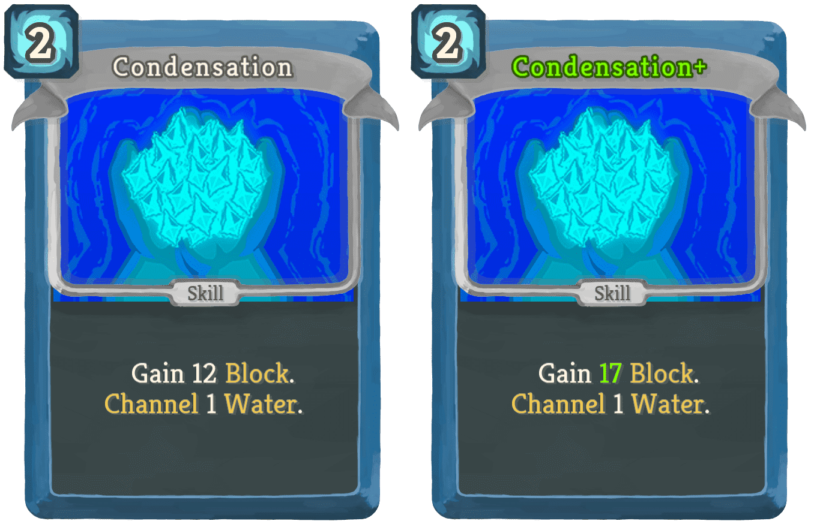
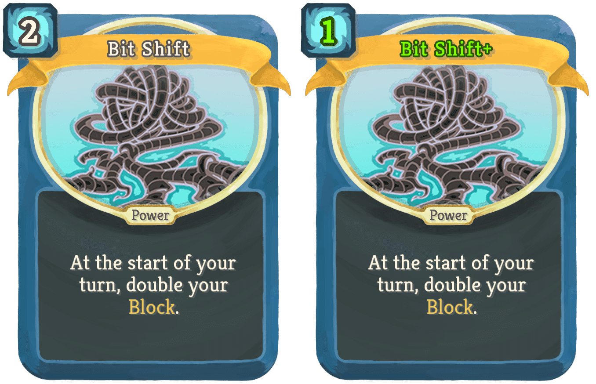
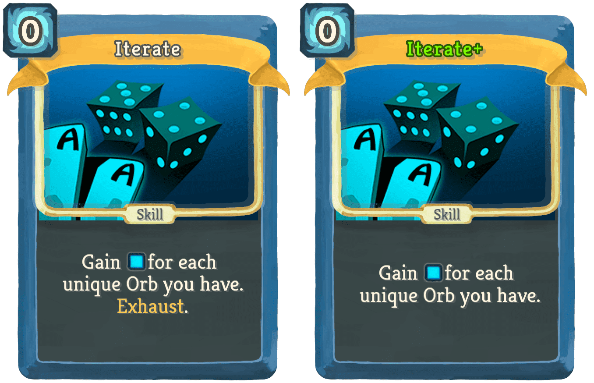

| Name | Image | Rarity | Type | Cost | Description |
|---|
| Condensation |  | Common | Skill | 2 | Gain 12 (17) Block. Channel 1 Water. |
| Decompression |  | Common | Skill | X | Add X random (Upgraded) Common cards into your hand. They cost 0 this turn. Exhaust. |
| Heap |  | Common | Skill | 1 | Gain Block equal to 16 - the number of cards in your draw pile. |
| Reflect |  | Common | Skill | 0 | Channel 1 (2) Echo. Draw 1 (2) card(s). |
| Refraction |  | Common | Skill | 1 | Gain 6 (8) Block for each unique Orb you have. |
| Allocate |  | Uncommon | Skill | 1 | Gain 1 (2) Focus. Lose 1 (2) Strength. Lose 1 (2) Dexterity. |
| Approximate |  | Uncommon | Skill | 2 | Lose 3 (2) Focus. Gain an Orb slot. |
| Await |  | Uncommon | Skill | 0 | Lose [E] [E] (not [E]). Draw 3 cards. If you play them all this turn, return this from your discard pile to your hand. |
| Barrier |  | Uncommon | Skill | 3 | Gain 16 (22) Block. Channel 2 Wood. |
| Confuse |  | Uncommon | Skill | 1 | Shuffle your draw pile. Channel 1 (2) Mayhem. |
| Connect |  | Uncommon | Power | 0 | (Innate.)Every time you play 2 Common cards, draw 1 card. |
| Expand Memory |  | Uncommon | Skill | 0 | If you have 3 or more unique Orbs, gain 1 (2) Orb slot(s). |
| Firewall |  | Uncommon | Power | 1 | (Innate.)Whenever you play a Power card, gain 6 Block. |
| Mirage |  | Uncommon | Skill | 0 | Channel 1 (2) Echo. Channel (For 1 (2) turns, channel) 1 Echo at the end of your turn. |
| Optimise |  | Uncommon | Attack | 1 | Deal 7 (10) damage. Draw 4 (5) cards. Discard all cards drawn this way that are not Common cards. |
| Overflow |  | Uncommon | Attack | 3 | Deal 17 (22) damage to all enemies. Channel 2 Water. |
| Precompile |  | Uncommon | Skill | 1 | Innate. Reduce the cost of Power cards in your draw pile by 1 this combat. Exhaust. |
| Replicate |  | Uncommon | Skill | 1 | Choose a Common card. Add 1 (2) copy (copies) of that card into your hand. |
| Reprieve |  | Uncommon | Skill | 2 | If the enemy does not intend to attack, gain 2 (3) Focus. |
| Autocomplete |  | Rare | Power | 3 (2) | Whenever you play a Power card, add a random Power card to your hand. |
| Bit Shift |  | Rare | Power | 2 (1) | At the start of your turn, double your Block. |
| Callback |  | Rare | Power | 4 (3) | Choose a non-Power Common card in your hand and exhaust it. Whenever you play a Power card, play that Common card. |
| Coroutine |  | Rare | Power | 3 | Your cards are played 1 (2) additional time(s). All cards target random creatures. |
| First Eye |  | Rare | Skill | 1 | Exhaust the top 3 (5) cards of your draw pile. Channel 3 (5) Wood. Exhaust. |
| Flux Capacitor |  | Rare | Skill | 1 | Replace all Channeled Orbs with (Channel 1) Mayhem (for each orb slot). |
| Garbage Collection |  | Rare | Power | 3 (2) | *Common cards cost 0. Whenever you play a common card, exhaust it. |
| Increment |  | Rare | Power | 2 (1) | Whenever you play a card, put a random card that costs 1 more from your draw pile into your hand. |
| Iterate |  | Rare | Skill | 0 | Gain [B] for each unique Orb you have. Exhaust. (not Exhaust.) |
| Multithread |  | Rare | Attack | 2 | Innate. Deal 5 (7) damage to a random enemy for each Common card in your draw pile. |
| Nova |  | Rare | Attack | 1 | Deal damage to all enemies equal to 4 (9) times the number of Powers played this combat. |
| Stream |  | Rare | Skill | 4 (3) | Play a random (Upgraded) Power card for each Common card you played this combat. |
| Template |  | Rare | Skill | 0 | Draw cards until you draw one that is not a Common card. Exhaust. (not Exhaust.) |
{kind=link}
{kind=link}
{kind=link}